In Pfade übersetzen
Mit einem KI-Tutor lernen
Ein KI-Tutor erklärt dir diese Seite und hilft dir bei den Übungen. Wähl deinen Assistenten:
Mit Claude öffnen Mit ChatGPT öffnen Mit Mistral Vibe öffnen
Du nutzt dein eigenes Konto beim Anbieter. Der Assistent ist kein Angebot von lernapps.net: lernapps liefert nur Inhalte und Übungen. Die Wahl gilt für alle Seiten, nur auf diesem Gerät.
Warum?
Die Pfadregeln sind leicht – schwer ist die Frage davor: Welche Pfade gehören überhaupt zum Ereignis? „Genau einmal rot“ klingt nach einem Pfad, sind aber zwei. „Beide gleich“ sind so viele Pfade, wie es Farben gibt. Wer diese Übersetzung sicher kann, löst die meisten Aufgaben zu Baumdiagrammen.
Regel
| Ereignis | Welche Pfade? |
|---|---|
| genau einmal rot | rot-nicht rot und nicht rot-rot – die Reihenfolge zählt. |
| beide gleich | ein Pfad pro Farbe: rot-rot, blau-blau, … |
| mindestens einmal rot | alle Pfade mit rot – oder . |
Dann gilt wie immer – jeden Pfad multiplizieren, die Pfade addieren.
Beispiel
Beide gleich
Urne mit 3 roten, 2 blauen und 1 gelben Kugel, zweimal ziehen mit Zurücklegen. Wie groß ist ?
- Pfade: rot-rot, blau-blau, gelb-gelb.
- Produkte: , , .
- Summe: .
Bild

Der Baum aus dem Beispiel: 3 rote (R), 2 blaue (B) und 1 gelbe (G) Kugel, zweimal mit Zurücklegen. Auf beiden Stufen: rot 3/6, blau 2/6, gelb 1/6. Orange sind die drei Pfade von „beide gleich“: rot-rot 1/4, blau-blau 1/9 und gelb-gelb 1/36. Unter den übrigen Enden stehen rot-blau 1/6, rot-gelb 1/12, blau-rot 1/6, blau-gelb 1/18, gelb-rot 1/12, gelb-blau 1/18.
Quelle: Eigene Darstellung der Mathe-Karte. Lizenz: MIT.Video dazu
Beim Abspielen gehen Daten an YouTube/Google, darunter deine IP-Adresse.
Übung
Aufgabe Nr. 1
Aufgabe Nr. 1
In einer Urne liegen 1 rote, 2 blaue und 3 gelbe Kugeln. Du ziehst zweimal nacheinander mit Zurücklegen. Ereignis E: „genau einmal rot“. Klick im Baum die Pfade an, die zu E gehören, und berechne dann P(E).
Das Bild zeigt den Baum; du kannst die Enden der Pfade anklicken.
P(E) = …
Lösung
Passende Pfade (4): rot-blau, rot-gelb, blau-rot, gelb-rot
Jeder Pfad als Produkt: 1/6 · 2/6 = 1/18; 1/6 · 3/6 = 1/12; 2/6 · 1/6 = 1/18; 3/6 · 1/6 = 1/12
- Pfadregel: P(E) = 1/6 · 2/6 + 1/6 · 3/6 + 2/6 · 1/6 + 3/6 · 1/6 = 5/18
Übung
Drei Beispielaufgaben, jede mit ihrer Lösung:
Aufgabe Nr. 1
In einer Urne liegen 4 rote und 1 blaue Kugeln. Du ziehst zweimal mit Zurücklegen. Wie groß ist die Wahrscheinlichkeit, dass beide Kugeln dieselbe Farbe haben? Gib sie als Dezimalzahl an, auf zwei Nachkommastellen gerundet.
Tipp
„Beide gleich“ hat so viele Pfade, wie es Farben gibt.
Lösung
- Pfade: rot-rot und blau-blau. .
Richtige Antwort: 0,68
Aufgabe Nr. 2
In einer Urne liegen 6 rote und 1 blaue Kugeln. Du ziehst zweimal mit Zurücklegen. Wie groß ist die Wahrscheinlichkeit, dass beide Kugeln dieselbe Farbe haben? Gib sie als Dezimalzahl an, auf zwei Nachkommastellen gerundet.
Tipp
„Beide gleich“ hat so viele Pfade, wie es Farben gibt.
Lösung
- Pfade: rot-rot und blau-blau. .
Richtige Antwort: 0,76
Aufgabe Nr. 3
In einer Urne liegen 1 rote und 4 blaue Kugeln. Du ziehst zweimal mit Zurücklegen. Wie groß ist die Wahrscheinlichkeit, dass beide Kugeln dieselbe Farbe haben? Gib sie als Dezimalzahl an, auf zwei Nachkommastellen gerundet.
Tipp
„Beide gleich“ hat so viele Pfade, wie es Farben gibt.
Lösung
- Pfade: rot-rot und blau-blau. .
Richtige Antwort: 0,68